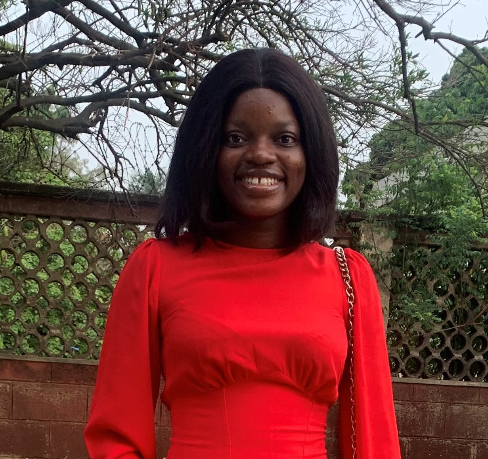

Cynthia Adeagbo Ajagunna

Summary
I am a web developer with a passion for building innovative solutions.
I am driven by the belief that technology can transform the lives of people and improve the world.
My goal is to create user-centric and impactful solutions that solve real life problems.
Education
- University of Lagos,Akoka,Lagos State. Adult Education 2021- till date.
- Oxford Home Study Center Advanced Diploma in Media Studies 2022.
- Fortlad International College,Mushin 2017.
- Abiodun Primary School,Mushin 2011.
Work Experience
Social Media Manager for Soft-touch Events.
August 2020- June 2021
- Analytic and reporting
- Advertising
- Stay updated with trends
- Crisis Management
Content Strategist for TCFcakes.
January 2022 till date.
- Trends and industry Research
- Copywriting
- SEO optimization
Skills
- Attention to details
- Proficient in HTML,CSS and JAVASCRIPT.
- Experience with Canva designs
- Critical thinking
- Content creation
- Creative writing
- Networking and relationship building
- Problem Solving
- Docuentation
Certifications
- Advanced Diploma in Media Studies from Oxford Home Study Center.
- Customer Service' from Oxford Home Study Center.
- Social Media Design from INCULTURE.
- Content Writing from CWW Tech Africa
- Fundamental of Digital Marketing from Googl Digital Skill Africa.
- Digital Marketing and content creation from Sidehustle.
Other